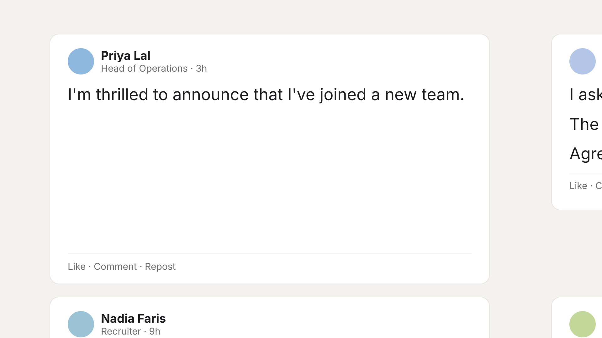
A LinkedIn-style post in huge type. Frame 0 already shows the first line.
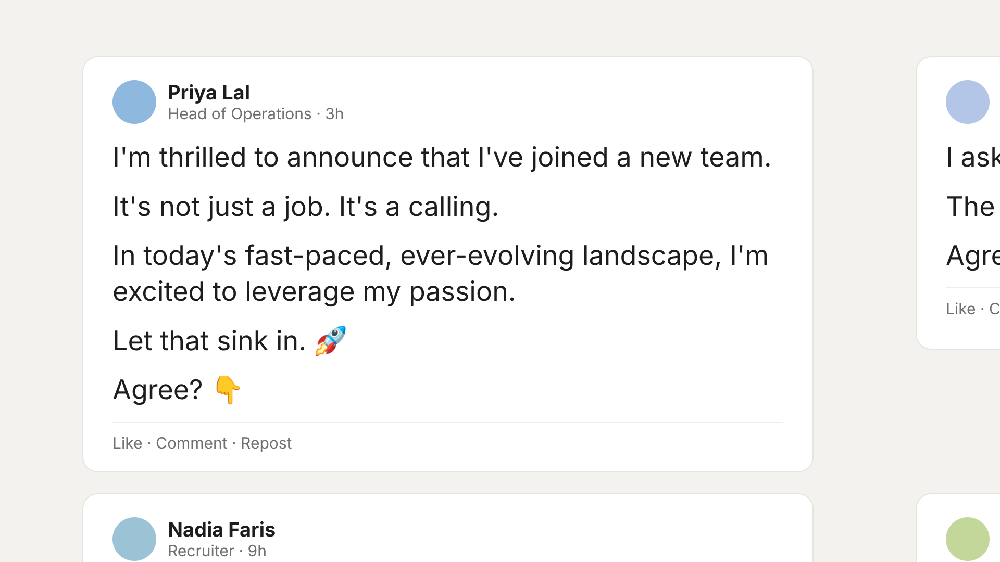
Each slop line arrives 0.7 s after the last: "Let that sink in. 🚀", "Agree? 👇".
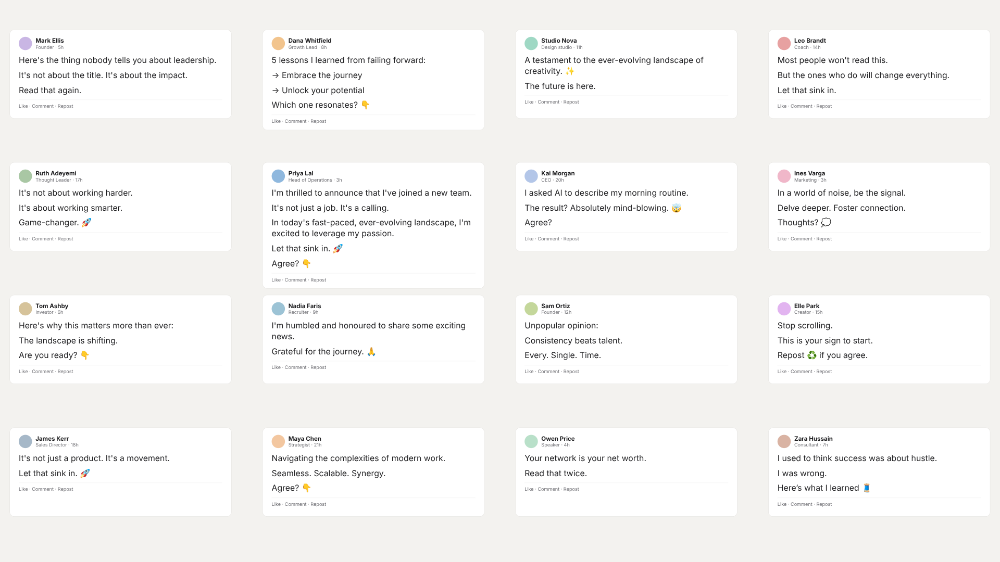
The camera pulls back: every post on the wall is the same slop, drifting up like a feed.
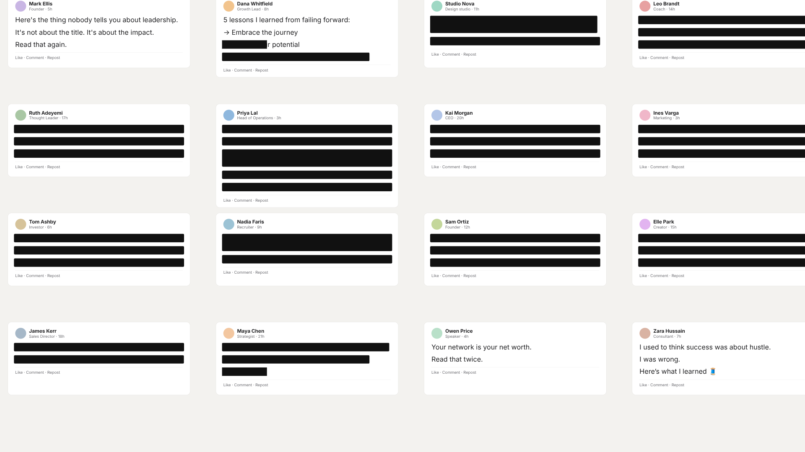
Black bars slam over every slop line.
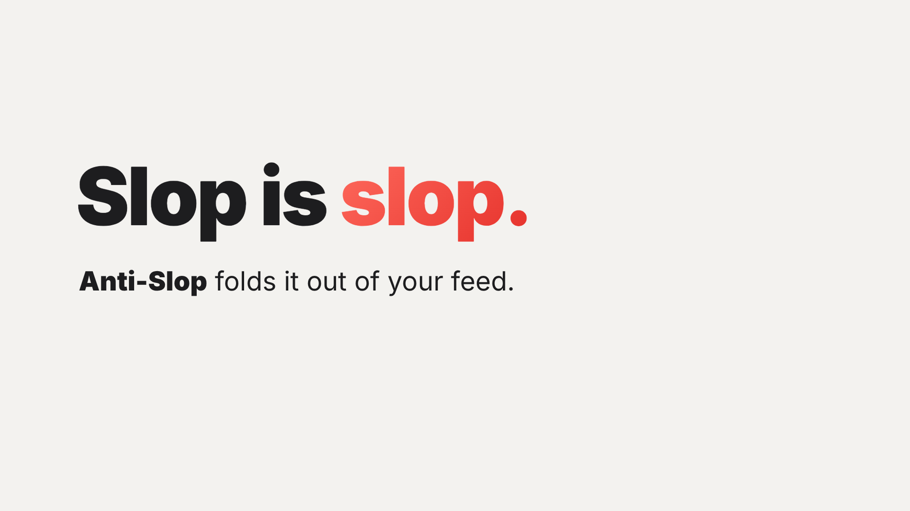
The line from your site lands; "Anti-Slop folds it out of your feed." names the product.
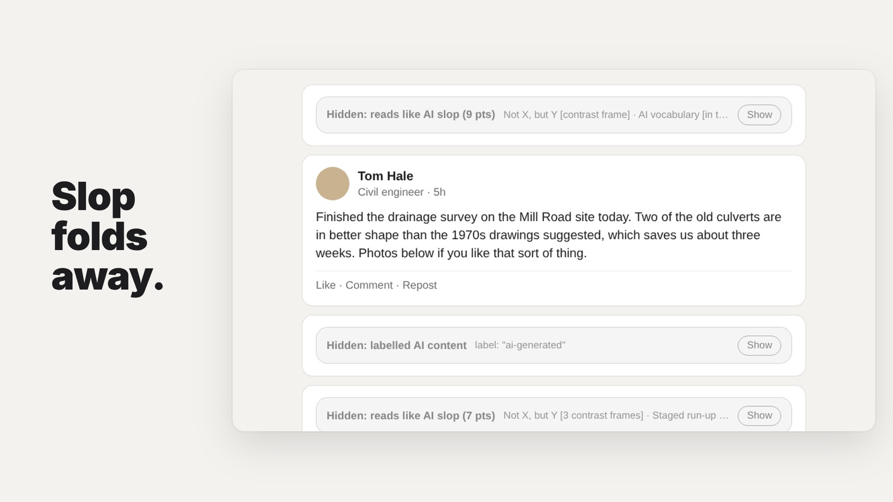
Recorded with the real extension: the feed is raw, then it switches on and three posts fold.
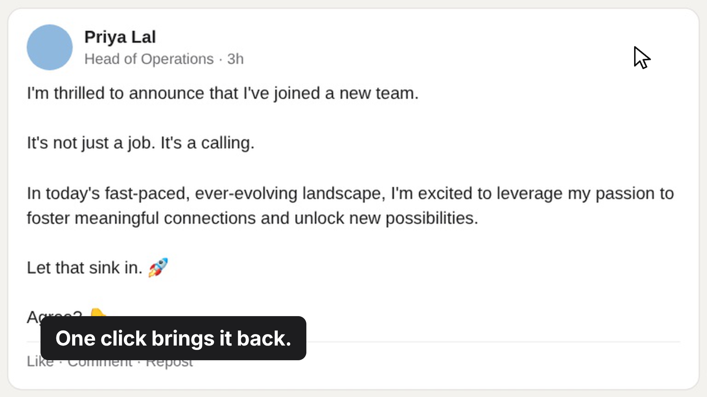
Punch in on a fold and its reason. The cursor clicks Show and the post comes back.
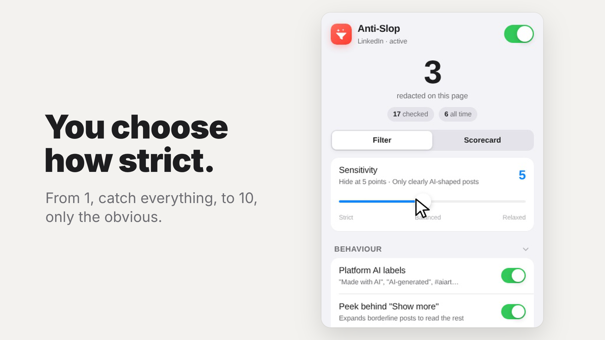
The real popup: 3 redacted on this page; the cursor drags the slider from 3 towards 8.
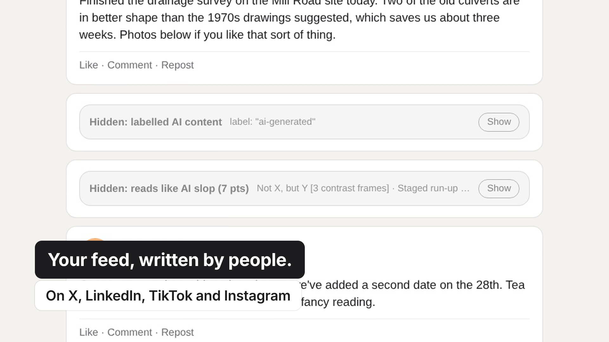
The cleaned feed scrolls. The four sites named.
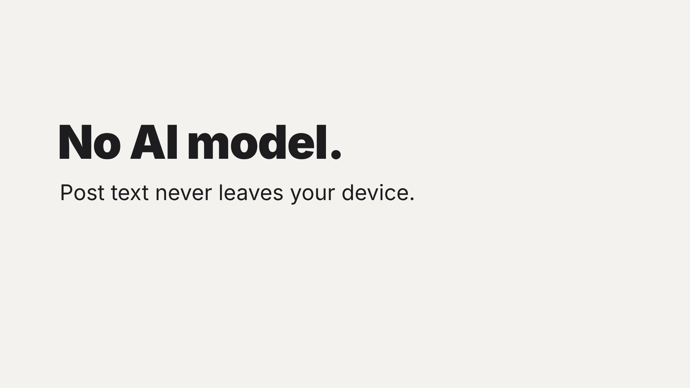
"No AI model. Post text never leaves your device."
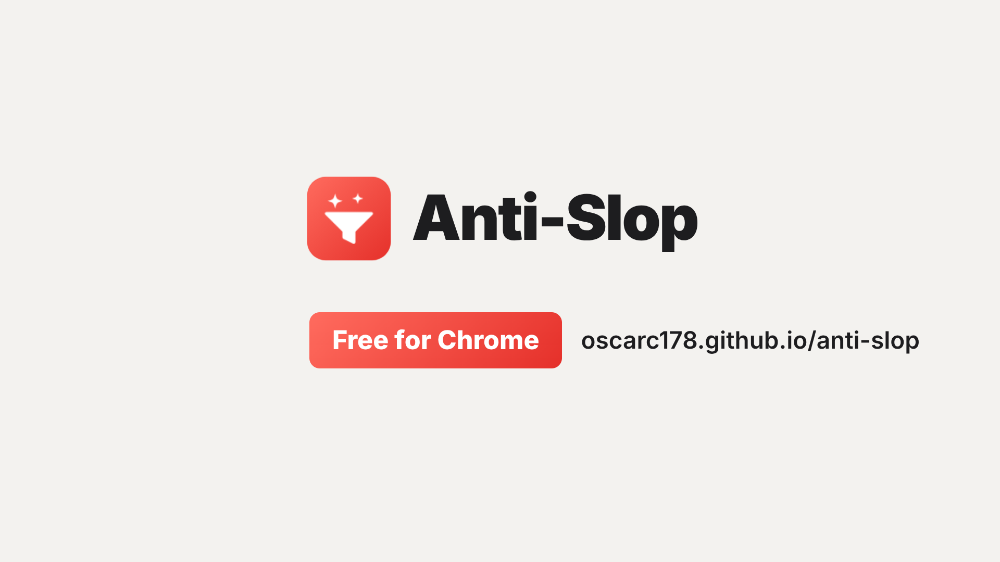
A redaction bar turns into the icon, the name wipes in, then the button and the web address hold.